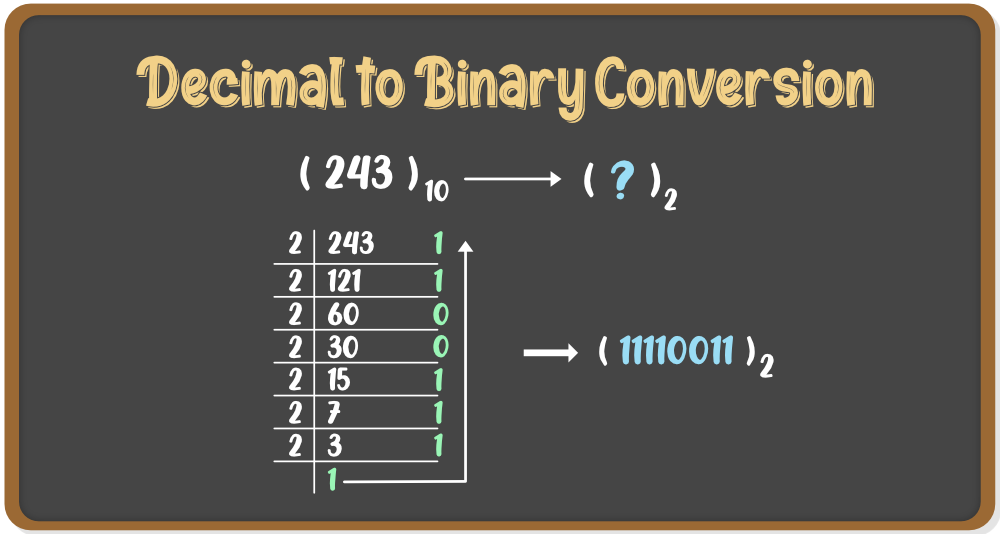
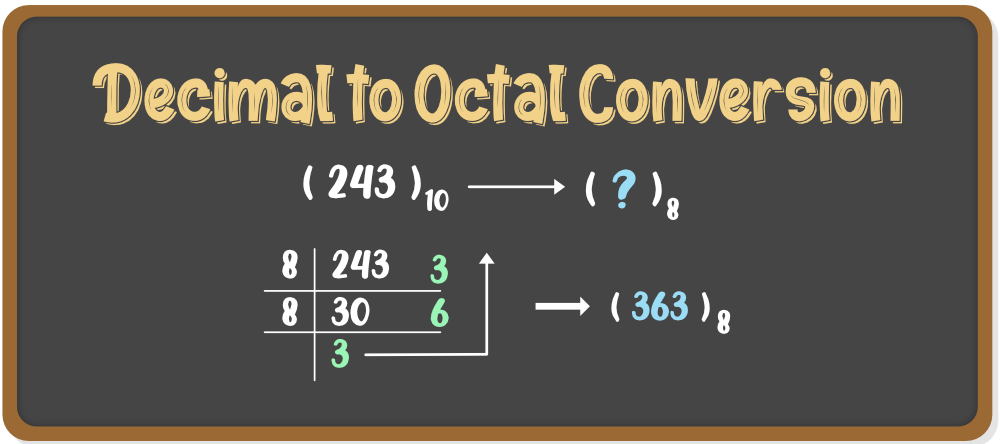
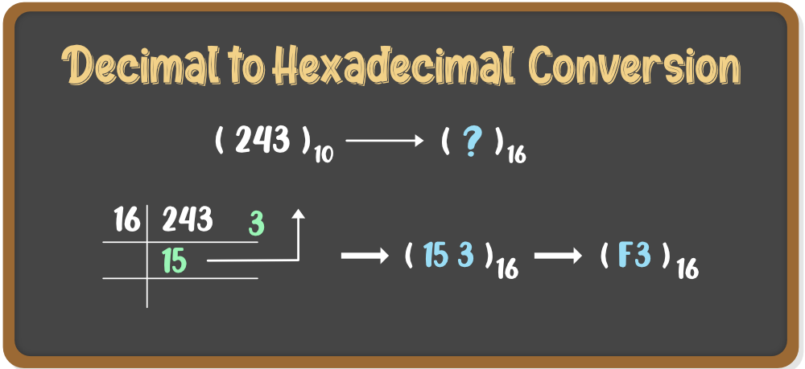

INTRODUCTION OF DECIMAL NUMBER SYSTEM
"The Decimal Number System has the base number 10 and this notation is called the decimal notation." This number system has its applications in computer and computer science. This is the base 10 number system as it has 10 digits in its number systems. It can be written as 0, 1, 2,3,4,5,6,7,8 and 9. Every digit in this number system has a position and every digit is 10 times more significant than the previous one.
DECIMAL TO OTHER CONVERSIONS
Decimal to Binary
Steps to convert decimal number to binary Number
- Divide the given number by 2.
- Take the quotient for the next iteration.
- And the remainder for the binary digit.
- Divide the obtained quotient again by 2
- Repeat the steps until we get a quotient equal to 0.

Decimal to Octal
Decimal to Octal conversion is the same like decimal to binary just instead of 2 the number should be divided by 8

Decimal to Hexadecimal
Decimal to Hexadecimal conversion is the same as decimal to binary just instead of 2 the number should be divided by 16.
